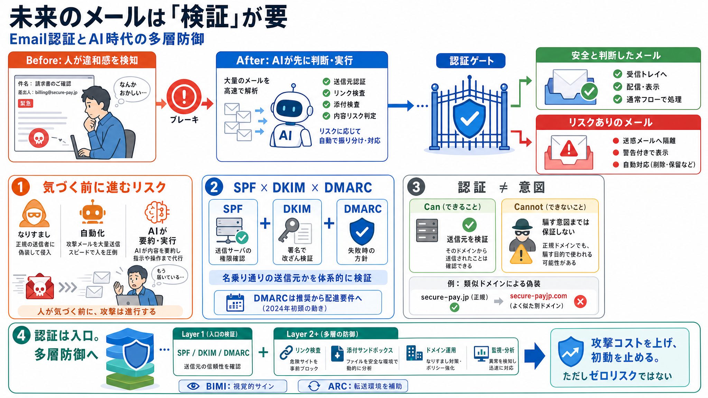

Email Security Predictions 2026: What To Expect
# Email Security Predictions for 2026: What Companies Need to Prepare For. Email security predictions for 2026 point to …

AIフィルタやAIアシスタントが増えるほど、違和感に気づく前に処理されるリスクが上がります。そのとき頼りになるのが、送信元を技術的に確かめる土台です。
従来は「From欄が少し違う」「文が不自然」などを人が手がかりにできました。しかしAIが読み取り・要約・実行を加速すると、被害は“気づく前”に進みます。
メール認証（SPF・DKIM・DMARC）は、「本当にその組織から来たか」を受信側が判断するための入口です。コンテンツ検査に行く前のゲートになります。
単機能ではなく、組み合わせることで受信側が「来た先が名乗り通りか」を体系的に評価できます。記事の核は“相互連携”です。
AIフィルタは認証結果を意思決定の入力として使いやすく、AIアシスタントはメールを速く処理します。だから“見抜く前に実行される”時間差を縮める必要があります。
Google/Yahooがバルク送信者にDMARC設定を「信頼できる配信の条件」として要求し始めた動きは、任意から“配達要件”への移行を示します（2024年初頭）。
BIMIはロゴ表示などの視覚的サインで信頼を拡張し、ARCの考え方を踏まえてDKIM設計の見直しも進みます。認証基盤の上に“次のサイン”が積み上がっています。
認証はドメインの身元確認には強い一方、「ユーザーを騙す悪意」までは判定できません。類似ドメイン＋適切なDMARCで通過しうる点が限界です。
認証は「安全の保証」ではなく、攻撃の成立コストと複雑性を上げることで抑止力になります。自動化される未来でも、ゼロリスクにはならない前提が重要です。
強みは「人間の注意」から「認証というインフラ」へ捉え直した因果が明確なことです。一方で、残る攻撃面への具体策や、実務ロードマップは不足しています。
認証を“信頼の層”として扱い、リンク検査・サンドボックス・ドメイン運用・監視などに接続するのが読み解きのポイントです。認証“だけ”を過信しないでください。
本デッキはユーザー提示文（「The future of email」要約・論点）に基づいて整理しています。記事中で言及された要点：SPF/DKIM/DMARCの役割・AI普及での優先度・2024年初頭のGoogle/Yahoo DMARC条件・BIMI/ARC・認証の限界（意図保証なし）。
# Email Security Predictions for 2026: What Companies Need to Prepare For. Email security predictions for 2026 point to …
# The Complete DMARC Best Practices Guide for 2026. DMARC implementation in 2026 is no longer optional for organizations…
# Email Authentication 2026: Everything You Need to Know About BIMI and Brand Logo Display. Email authentication in 2026…
# Email security best practices for 2026. 1. What is email security in 2026? **Executive summary:** Email remains the mo…
See all senders on your domain. DMARCbis to DMARC: Spec updates and new RFCs. Why Gmail is rejecting your emails (and ho…